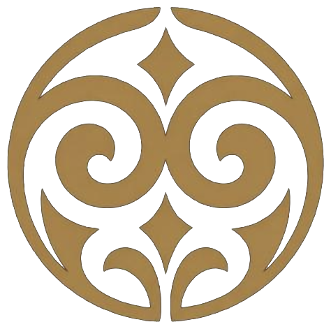
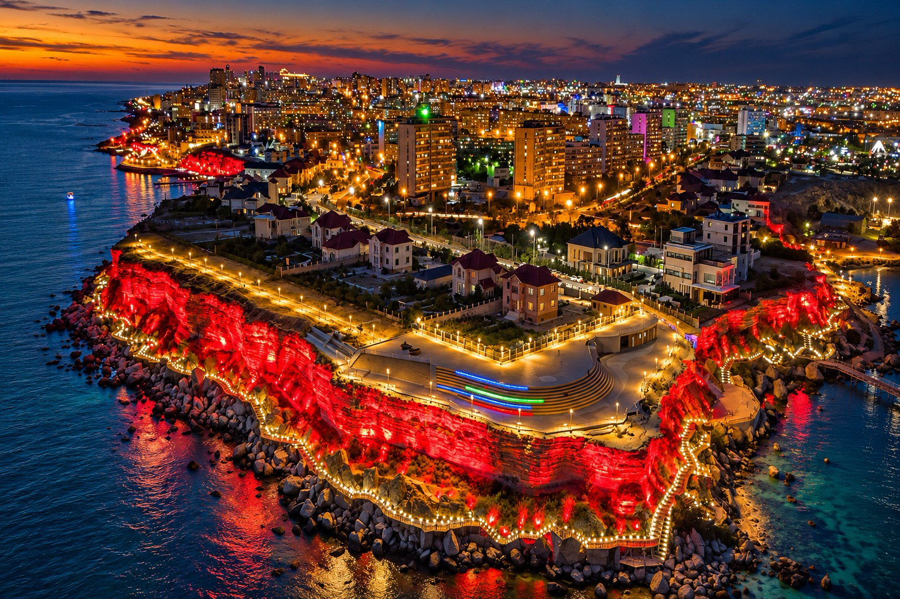
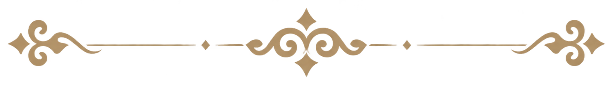
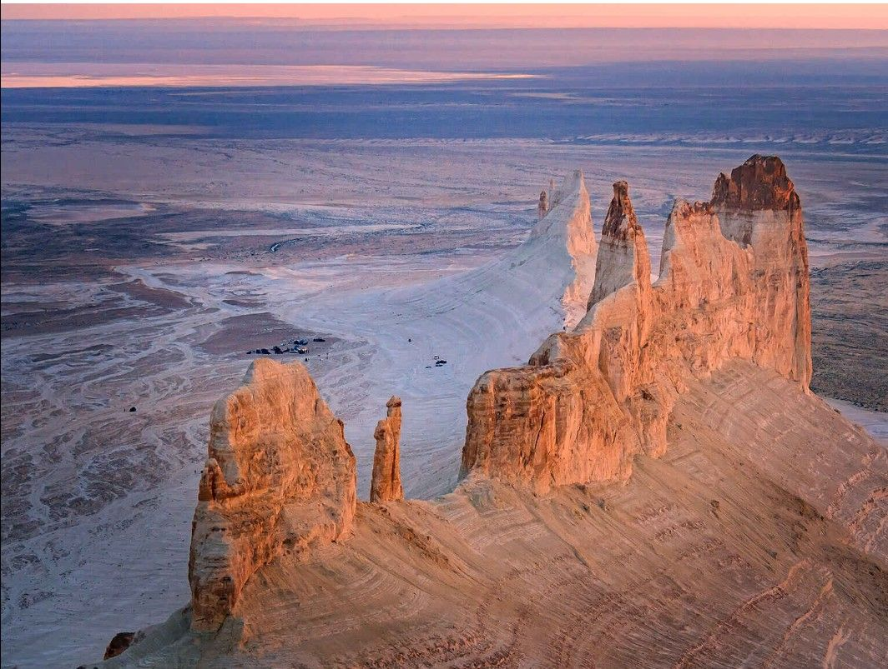
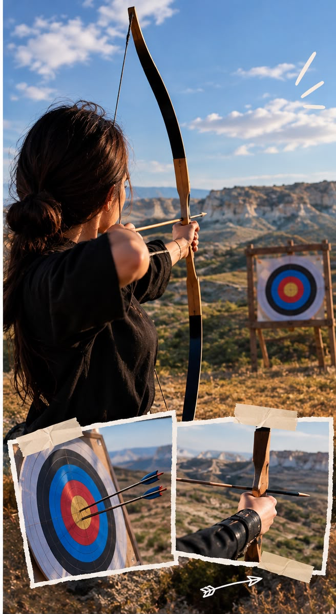
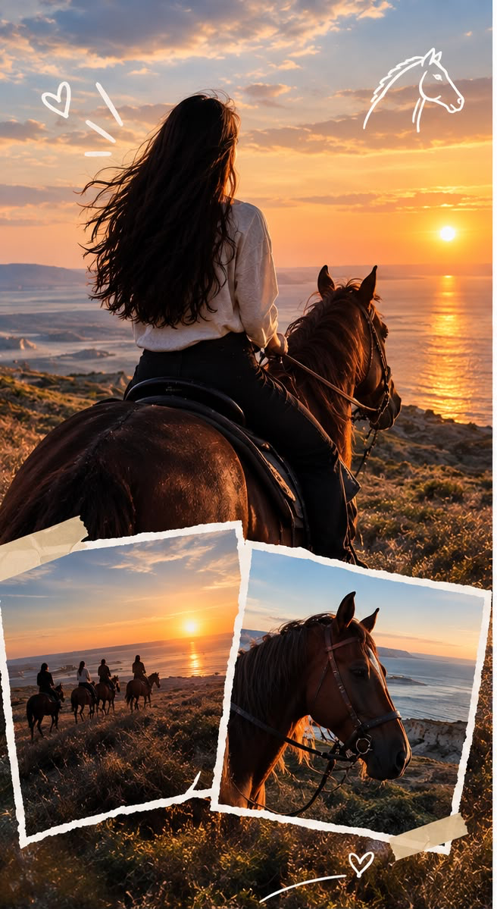
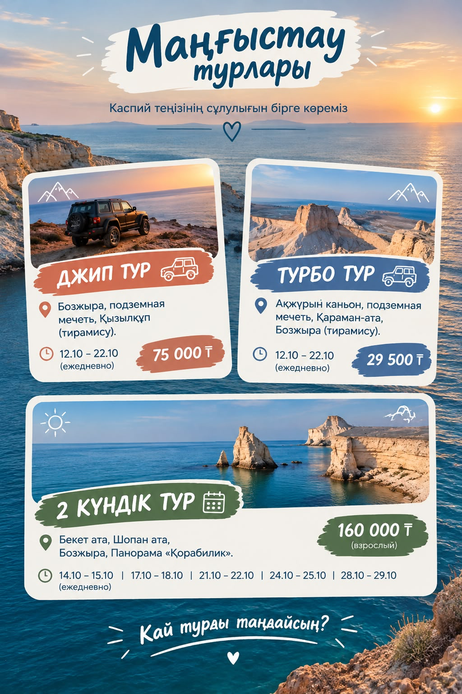

Zerger Serikqali
@zerger_serikqali

EthnoQazaqМАҢҒЫСТАУ МҰРАСЫ Саяхатымды жоспарлау →Табиғатты зертте. Дәстүрді таны.
Өзіңе арналған сапар бағытын құрастыр.


Орынды таңда, тарихын оқы.
Ұнаған жеріңді картадан зертте.
Баспана, қолөнер, дастарқан, салт, ойын және күй — бәрі бір кеңістікте.

Бозжыраның кең панорамасын көріп, Маңғыстаудың табиғи болмысын сезініңіз.
Үй рецептері және Ақтауда дәм татуға болатын орындар.
Бауырсақ, ет, қуырдақ, сорпа — дастарқан мәдениетінің таныс дәмдері.
Ұлттық нақышты өзіңмен бірге алып кет.
@zerger_serikqali
@zhaqut.kumisteri
@qazaq_silver
Баға, күн және бос орынды оператордан нақтылаңыз.
TikTok видеосы осы бетте ойнатылады.
Маңғыстаудағы жеке және топтық турлар, Бозжыра бағыттары.
Маңғыстау бойынша джип және бірнеше күндік шытырман бағыттар.
Автобус, джип және көпкүндік турлар; Бозжыра, Қызылқұп, киелі орындар.

Нысана көздеп, дәстүрлі садақ ату тәжірибесін көріңіз.

Маңғыстау даласын ат үстінде сезініп, серуенге алдын ала жазылыңыз.
